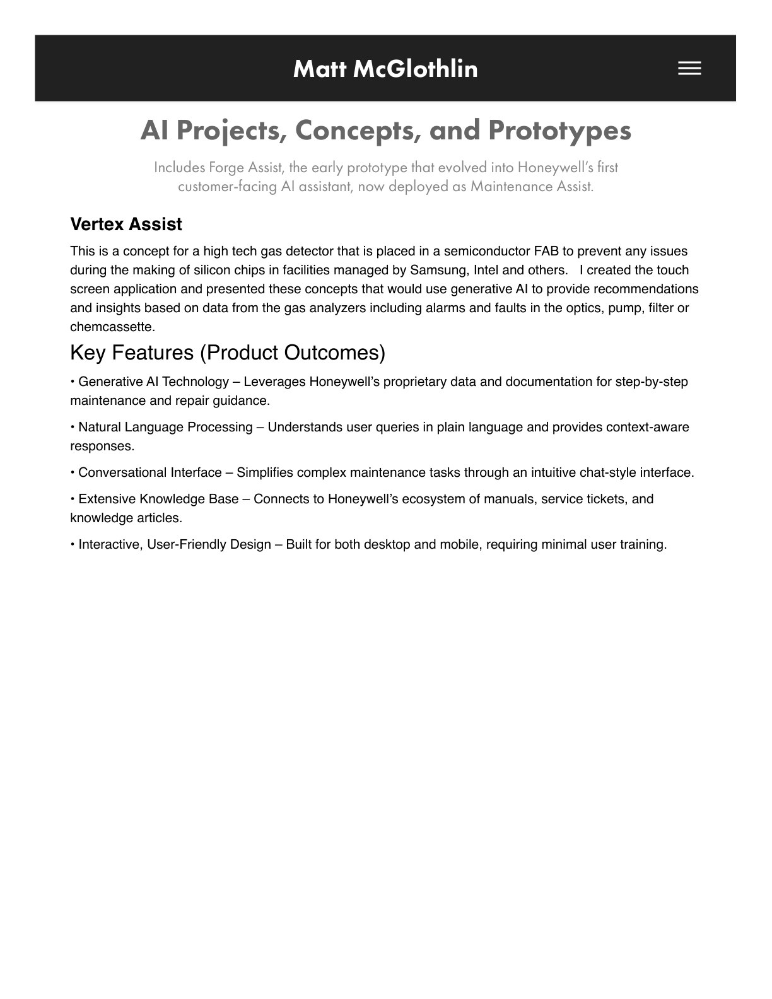
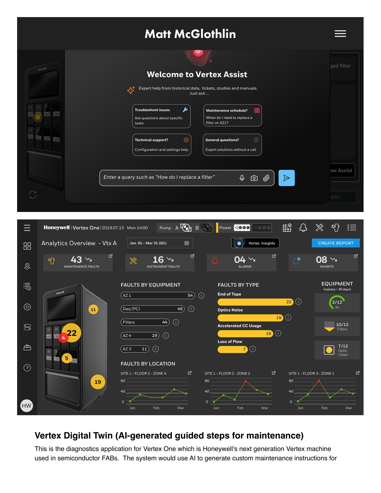
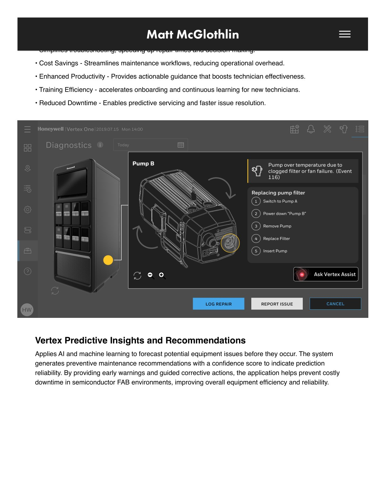
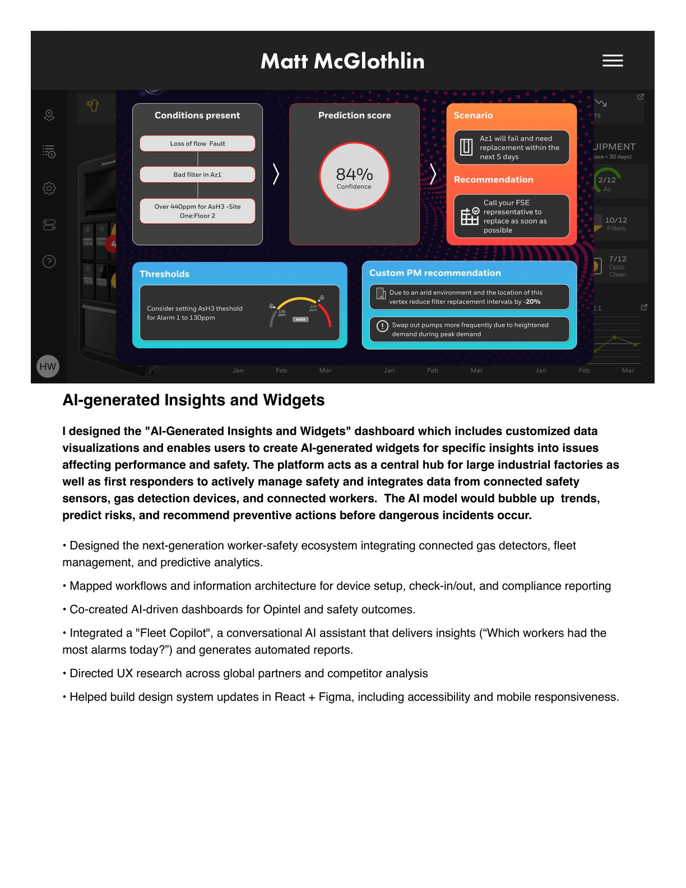
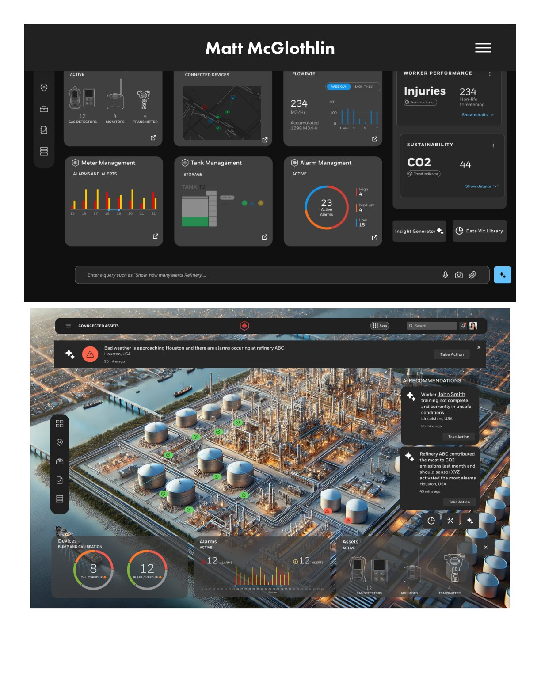
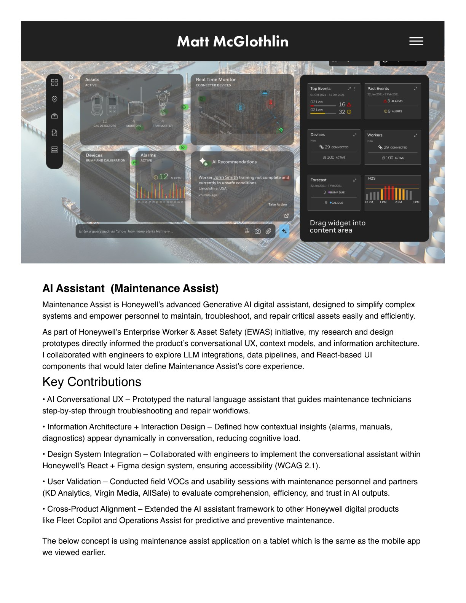

Honeywell · Generative AI · Conversational UX
AI Projects, Concepts & Prototypes
AI concepts and prototypes — including Forge Assist, the early prototype that evolved into Honeywell's first customer-facing AI assistant, now deployed as Maintenance Assist.
Vertex Assist
A generative-AI concept for gas detectors in semiconductor fabs: a touch application that provides recommendations and insights from analyzer data — alarms and faults in the optics, pump, filter, or chemcassette — through a conversational, context-aware interface.
Digital Twin & Predictive Insights
AI-generated guided maintenance steps simplify troubleshooting and speed repairs, while predictive insights forecast equipment issues before they occur — each recommendation carrying a confidence score so technicians know how much to trust the prediction.
Maintenance Assist
I prototyped the natural-language assistant that guides maintenance technicians step-by-step through troubleshooting and repair — collaborating with engineers on the RAG architecture and LLM integration that became Honeywell's first customer-facing AI assistant.





